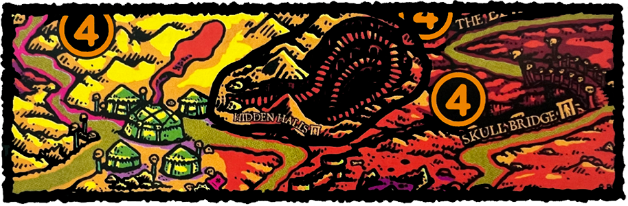
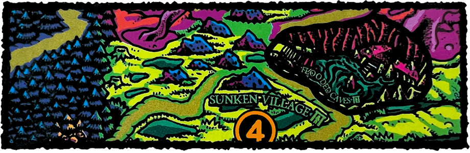
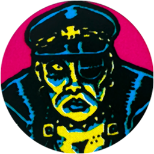

BRINGER OF DOOM
Your hatred for the corrupt & tyrannical rule of the Würstreich has led you to this glorious moment of retribution! Soon you will clutch the Doombringer Horn in your trembling fist & sound the clarion call of joyous & resounding destruction!
SETUP
If you are playing Bringer of Doom as a standalone mission, the Bounty Level is 3 & the party starts at Witch Hill.
Place the Hidden Halls map overlay near the Bandit Camp. This represents a new Location that is adjacent to the Bandit Camp & shares its Danger Level. You can only move to the Hidden Halls if the Bandit Camp is Explored ġ.

Place the Flooded Caves map overlay near the Sunken Village. This represents a new Location that is adjacent to the Sunken Village & shares its Danger Level. You can only move to the Flooded Caves if the Sunken Village is Explored ġ.

| đ High Inquisitor at the Holy Order |  |
Place Clues Ġ1 through 3 on the following Locations. These define the route of the High Inquisitor's patrol.
Ġ1 North Bridge
Ġ2 East Bridge
Ġ3 Fishmonger Camp
Shuffle the remaining Clue Ġ counters together & place one facedown randomly on each of the following Locations. These indicate ancient ruins where the Doombringer Horn & its guardian may be found.
Ġ Flooded Cave
Ġ Hidden Halls
Ġ Tower Island
ĝ Daemonic Voivod (Epic Monster)
ĝ Doombringer Horn (Epic Loot)
Create a separate Mission ĝ deck using the following Encounters. One of these will be drawn randomly when you Explore in the ruins listed above.
ĝ Eerie Silence/Death Pit (Lowlands Encounter)
ĝ Hypnocrystals/Charnel House (Badlands Encounter)
ĝ Lost in the Fog/Hideous Idol (Wetlands Encounter)
OBJECTIVE
Advance the Doom track to 6 with the Hand of Doom at Brüttelburg while there are no Towns Ę in the Lowlands (each Settlement Ė in the Lowlands must be a Danger Level).
THE HARBINGERS OF DOOM
Mighty champions of fanatical cults who worship the Hand of Doom known as the Harbingers hold secret knowledge about the legendary Doombringer Horn. Only if you best them in battle will they deem you worthy of its power!
Before you acquire the Doombringer Horn, each time you destroy a Harbinger (Death Knight, Knife Wraith, Murder Knight, or Pain Knight) you may choose a facedown Clue Ġ counter on the board & look at its value.
THE DOOMBRINGER HORN
An enchanted horn created by daemonic Morbad blacksmiths in the depths of the Chasm & bestowed upon the Necromancer's devoted servants as a means to summon the Hand of Doom in times of great need. If you can steal it from the clutches of the Necromancer's servants, you can use it to smash Brüttelburg into dust!
When you pass an Explore ġ Test in a space with a facedown Clue Ġ counter (Flooded Caves, Hidden Halls, or Tower Island), flip that counter.
If you reveal Clue Ġ4 or 5, draw an Encounter from the Mission ĝ deck & resolve it (the lower half) during the Encounter Phase (do not draw a random Encounter Ĥ this turn). Then, remove the Clue Ġ counter.
If you reveal Clue Ġ6, draw an Encounter from the Mission ĝ deck & resolve it (the lower half) during the Encounter Phase (do not draw a random Encounter Ĥ this turn). In addition, take the Daemonic Voivod counter & place it in your space.
If you destroy the Daemonic Voivod, do not make a Loot roll; instead take the Doombringer Horn from the Mission ĝ deck.
When you find the Doombringer Horn, remove Clue Ġ6 & all remaining facedown Clue Ġ counters from the board. Then, place these facedown on each Settlement Ė in the Lowlands (Brüttelburg, the Holy Order & the Hunt Lodge). These serve as a reminder of which of the Settlements Ė must have a Danger Level at the end of the mission.
THE HIGH INQUISITOR
Your infamous exploits have reached the ears of the High Inquisitor of the East, the top agent of the inquisition in the Borderlands. Your allies report that she patrols the Lowlands, rounding up subversives & outlaws to put to gruesome torture.
The High Inquisitor will patrol the Lowlands until she becomes aware of the party & their devilish plans. While on patrol, the High Inquisitor will first move towards Clue Ġ1. Once she reaches Clue Ġ1, she will move to Clue Ġ2, then to Clue Ġ3. From Clue Ġ3 she will start the cycle again, moving back to Clue Ġ1 & continuing through the facedown counters in order.
This patrol cycle will continue until an adventurer uses the Doombringer Horn for the first time, or when an adventurer moves into the High Inquisitor's space. If either of these happen, the High Inquisitor will move towards the adventurer with the Doombringer Horn (although if there are any adventurers in her space, she will not move). At this point you may remove Clues Ġ1 through 3 from the board. Once the Doombringer Horn has been used, you can no longer Bribe or use Official Papers against the High Inquisitor.
MISSION PATH
With the last note of the Doombringer Horn, the Hand of Doom materializes before you in a cloud of sulphurous smoke! Its fingers twist into unnatural shapes as it forms the esoteric Signs of Power in sequence, ripping the ground apart & shattering the walls of Brüttelburg. Civilians & soldiers run for their lives as their fortress-city crumbles around them. Fanatical killers of the Necro Coven dance in the streets, slaughtering the panic-stricken city guard amidst the chaos.
A chasm tears through the ground, breaking the city in half & spilling forth endless squirming legions of the Vermin Queen. These devouring swarms sweep over the city like a living wave of stinking flesh & gnashing teeth.
In the aftermath, the smoking ruin of Brüttelburg is evacuated as refugees flee West to the heart of the Empire, preyed upon by cultists & bandits along their journey. The Würstreich's border has been shattered & their stranglehold over the Lowlands utterly destroyed. You are victorious!